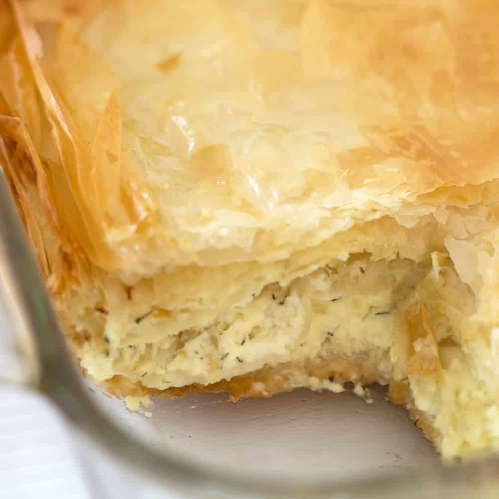

Gibanica

Description
Cheese-filled Serbian Gibanica is savory, slightly salty, and altogether addicting pastry. It is perfect party food.
Ingredients
- 3 large eggs
- 1 pound ricotta cheese
- 1 pound feta cheese rinsed if in salt brine, cut into small cubes or crumbled
- 2-3 tablespoon sour cream
- 1/3 cup milk
- 1/3 cup seltzer or sparkling water
- 1 teaspoon dried dill
- Freshly ground pepper to taste
- 1 pound fillo dough
- 4 tablespoons melted butter/oil or a combination
Steps
- Combine the eggs, ricotta, feta, sour cream, milk, and seltzer or sparkling water in a medium-large bowl. Mix well and add the dill and freshly ground pepper. Set aside.
- Preheat the oven to 375 degrees F. Set up your fillo dough, pan, bowl of filling, and butter/oil.
- After defrosting the fillo layers according to the directions on the box, lay them next to a 9 x 11" oven-safe pan. LIghtly brush or spray the pan with butter/oil. Put down the first sheet of fillo dough, brush it lightly with butter, oil and continue to do that until you have used about 1/3 of the fillo sheets.
- Spread half of the filling smoothly over the top sheet of fillo dough and continue adding fillo dough sheets, one at a time, brushing with butter/oil after each one, until you have used another 1/3 of the fillo dough sheets. Spread the remaining half of the filling on top of the last sheet of dough and use up the remaining sheets of fillo dough. Brush the top sheet of fillo dough.
- Bake for 35-45 minutes until the top is golden brown, especially around the edges.
- Let the Gibanica sit for about 5-10 minutes before you cut it.